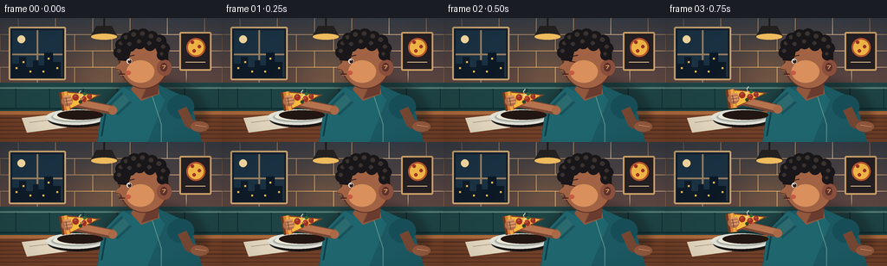
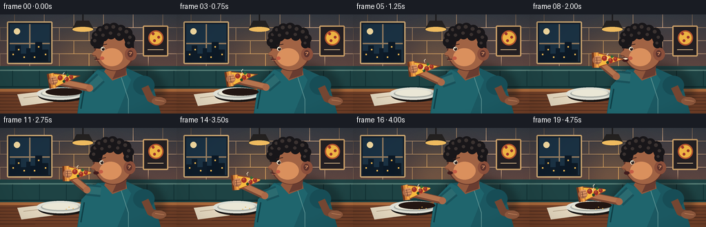
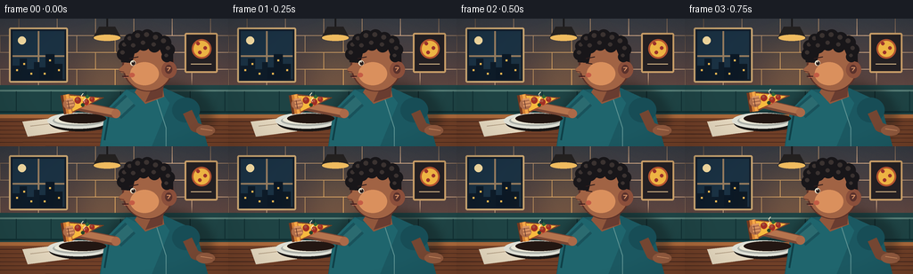

CODING AGENTS AS PIXEL WORLD MODELS
traex/GPT-5.6-Sol · motion_rationality_0009
点击播放 · 原生 RGB 像素
逐轮保存的候选
回放视频、检查图与代码变化。
每份候选均可单独播放。实际图片检查记录在下方工具轨迹中。
候选 01播放与检查图
点击播放 · 原生 RGB 像素

展开代码变化
--- 上一保存版本
+++ 本次保存版本
@@ -0,0 +1,354 @@
+from pathlib import Path
+import math
+import json
+import numpy as np
+from PIL import Image, ImageDraw, ImageFilter
+import artifact_io
+
+ROOT = Path(__file__).resolve().parent
+SPEC = json.loads((ROOT / 'task_spec.json').read_text())
+W, H, N = SPEC['width'], SPEC['height'], SPEC['frames']
+S = 4
+rng = np.random.default_rng(11)
+
+
+def sc(v):
+ if isinstance(v, (tuple, list)):
+ return tuple(int(round(x*S)) for x in v)
+ return int(round(v*S))
+
+
+def pts(seq):
+ return [(int(round(x*S)), int(round(y*S))) for x, y in seq]
+
+
+def smooth(x):
+ x = max(0.0, min(1.0, x))
+ return x*x*(3-2*x)
+
+
+def mix(a, b, t):
+ return a + (b-a)*t
+
+
+def ellipse(draw, box, fill, outline=None, width=1):
+ draw.ellipse(sc(box), fill=fill, outline=outline, width=sc(width) if outline else 1)
+
+
+def rect(draw, box, fill, outline=None, width=1, radius=0):
+ if radius:
+ draw.rounded_rectangle(sc(box), radius=sc(radius), fill=fill, outline=outline,
+ width=sc(width) if outline else 1)
+ else:
+ draw.rectangle(sc(box), fill=fill, outline=outline, width=sc(width) if outline else 1)
+
+
+def line(draw, xy, fill, width=1, joint='curve'):
+ draw.line(pts(xy), fill=fill, width=sc(width), joint=joint)
+
+
+def polygon(draw, xy, fill, outline=None):
+ draw.polygon(pts(xy), fill=fill)
+ if outline:
+ draw.line(pts(list(xy)+[xy[0]]), fill=outline, width=sc(1), joint='curve')
+
+
+def background(frame):
+ # Warm restaurant wall gradient with a subtle film-like texture.
+ hh, ww = H*S, W*S
+ y = np.linspace(0, 1, hh)[:, None, None]
+ top = np.array([53, 58, 66], dtype=float)[None, None, :]
+ bot = np.array([129, 78, 61], dtype=float)[None, None, :]
+ arr = np.repeat(top*(1-y) + bot*y, ww, axis=1)
+ noise = rng.normal(0, 1.15, (hh, ww, 1))
+ arr = np.clip(arr + noise, 0, 255).astype(np.uint8)
+ im = Image.fromarray(arr, 'RGB').convert('RGBA')
+ d = ImageDraw.Draw(im, 'RGBA')
+
+ # Brick courses, understated so the character remains the focal point.
+ for yy in [19, 38, 57, 76]:
+ line(d, [(0, yy), (256, yy)], (238, 190, 148, 25), .7)
+ for row, yy in enumerate([0, 19, 38, 57]):
+ off = 0 if row % 2 else 21
+ for xx in range(off, 257, 43):
+ line(d, [(xx, yy), (xx, yy+19)], (238, 190, 148, 19), .7)
+
+ # Evening window.
+ rect(d, (10, 10, 76, 72), (17, 28, 42, 255), (206, 169, 116, 160), 2, 2)
+ rect(d, (14, 14, 72, 68), (26, 49, 67, 255))
+ line(d, [(43, 14), (43, 68)], (152, 126, 96, 180), 2)
+ line(d, [(14, 42), (72, 42)], (152, 126, 96, 180), 2)
+ # Skyline and glowing windows.
+ polygon(d, [(14,68),(14,53),(22,53),(22,45),(30,45),(30,57),(38,57),(38,49),(44,49),(44,68)], (13,27,40,255))
+ polygon(d, [(44,68),(44,55),(51,55),(51,40),(61,40),(61,51),(70,51),(70,68)], (11,24,37,255))
+ for xx, yy in [(18,57),(26,50),(34,61),(55,46),(65,57),(49,61)]:
+ rect(d, (xx, yy, xx+2, yy+2), (244, 187, 83, 190))
+ # Moon.
+ ellipse(d, (20, 20, 29, 29), (247, 222, 163, 220))
+
+ # Simple framed pizza illustration at back right.
+ rect(d, (207, 16, 244, 61), (35, 31, 34, 180), (202, 159, 104, 180), 2, 2)
+ ellipse(d, (215, 23, 237, 45), (180, 83, 47, 255))
+ ellipse(d, (217, 25, 235, 43), (238, 180, 67, 255))
+ for xx, yy in [(222,28),(230,33),(224,38)]:
+ ellipse(d, (xx-2, yy-2, xx+2, yy+2), (156, 50, 44, 255))
+ line(d, [(214,51),(237,51)], (222, 188, 141, 120), 1)
+
+ # Pendant lamp and pool of warm light.
+ line(d, [(120,0),(120,10)], (24, 24, 27, 255), 2)
+ polygon(d, [(111,9),(129,9),(136,22),(104,22)], (31, 30, 32, 255))
+ ellipse(d, (105,18,135,25), (249, 196, 100, 210))
+ glow = Image.new('RGBA', im.size, (0,0,0,0))
+ gd = ImageDraw.Draw(glow, 'RGBA')
+ ellipse(gd, (74,14,172,122), (255, 185, 82, 37))
+ glow = glow.filter(ImageFilter.GaussianBlur(sc(21)))
+ im = Image.alpha_composite(im, glow)
+ d = ImageDraw.Draw(im, 'RGBA')
+
+ # Booth back and seat.
+ rect(d, (0, 75, 256, 112), (30, 67, 68, 255))
+ line(d, [(0,81),(256,81)], (85, 123, 116, 130), 2)
+ line(d, [(0,105),(256,105)], (16, 47, 50, 200), 2)
+ for xx in range(18, 256, 39):
+ line(d, [(xx,82),(xx,104)], (16,48,51,110), 1)
+
+ # Table edge and wood grain.
+ polygon(d, [(0,108),(256,108),(256,144),(0,144)], (112, 63, 39, 255))
+ rect(d, (0,108,256,112), (170, 104, 58, 255))
+ for j in range(7):
+ yy = 116 + j*4.7
+ wig = math.sin(frame*.12+j)*.45
+ line(d, [(0,yy),(51,yy+wig),(104,yy-.3),(161,yy+wig),(218,yy),(256,yy-.2)],
+ (66, 37, 29, 80), .65)
+
+ # Plate and napkin, grounding the pizza action.
+ polygon(d, [(25,116),(69,111),(77,127),(31,133)], (229, 216, 191, 235))
+ line(d, [(34,121),(67,117)], (181, 160, 133, 100), 1)
+ ellipse(d, (55,108,124,127), (25,22,21,85))
+ ellipse(d, (53,106,122,124), (223, 224, 214, 255))
+ ellipse(d, (59,109,116,121), (172, 176, 169, 255))
+ ellipse(d, (61,109,114,119), (234, 231, 214, 255))
+ return im
+
+
+def motion(i):
+ # Deliberate narrative beats: pause, raise, bite, lower, chew.
+ if i <= 2:
+ p = 0.0
+ elif i <= 8:
+ p = smooth((i-2)/6)
+ elif i <= 11:
+ p = 1.0
+ elif i <= 17:
+ p = 1.0-smooth((i-11)/6)
+ else:
+ p = 0.0
+ bitten = i >= 11
+ return p, bitten
+
+
+def draw_person(im, i, p):
+ d = ImageDraw.Draw(im, 'RGBA')
+ lean = 1.7*p
+ chew = 0.0
+ if i >= 11:
+ chew = 1.2*math.sin((i-10)*math.pi*0.72)
+
+ # Soft cast shadow behind diner.
+ shadow = Image.new('RGBA', im.size, (0,0,0,0))
+ sd = ImageDraw.Draw(shadow, 'RGBA')
+ ellipse(sd, (119,71,239,149), (11,18,20,90))
+ shadow = shadow.filter(ImageFilter.GaussianBlur(sc(5)))
+ im.alpha_composite(shadow)
+ d = ImageDraw.Draw(im, 'RGBA')
+
+ # Torso and shirt, with seam/highlight detail.
+ polygon(d, [(141,80),(184,78),(219,94),(233,144),(112,144),(118,104)], (27,88,97,255))
+ polygon(d, [(142,80),(160,90),(178,79),(190,95),(170,144),(113,144),(118,104)], (31,101,109,255))
+ line(d, [(175,89),(186,123),(186,144)], (91,145,145,90), 1)
+ line(d, [(122,108),(117,137)], (15,63,71,145), 2)
+ # Far sleeve and resting arm on table.
+ ellipse(d, (193,89,224,117), (23,77,86,255))
+ line(d, [(210,105),(218,122),(230,126)], (116,70,50,255), 11)
+ ellipse(d, (220,120,241,132), (143,88,61,255))
+ line(d, [(225,124),(238,126)], (204,139,98,130), 1)
+
+ # Neck.
+ polygon(d, [(158,72),(181,69),(184,88),(163,96),(151,83)], (145,87,60,255))
+ polygon(d, [(174,70),(184,69),(182,88),(163,94)], (105,60,48,120))
+
+ # Head in left-facing three-quarter profile.
+ hx = -lean
+ ellipse(d, (137+hx,23,195+hx,82+chew*.25), (91,49,40,255)) # dark rim
+ ellipse(d, (139+hx,25,193+hx,81+chew*.35), (161,99,68,255))
+ # Ear.
+ ellipse(d, (181+hx,48,198+hx,67), (139,79,59,255))
+ ellipse(d, (185+hx,52,193+hx,62), (91,50,44,150))
+ line(d, [(187+hx,55),(191+hx,55),(188+hx,59)], (215,145,101,120), 1)
+ # Nose silhouette, aimed toward the pizza.
+ polygon(d, [(142+hx,49),(133+hx,57),(136+hx,61),(143+hx,61)], (161,99,68,255))
+ line(d, [(134+hx,59),(139+hx,60)], (91,48,39,155), 1)
+ # Face highlight and cheek.
+ ellipse(d, (146+hx,49,178+hx,75), (218,144,93,32))
+ ellipse(d, (145+hx,61,151+hx,66), (196,92,69,80))
+
+ # Hair mass plus curls for a readable silhouette.
+ polygon(d, [(136+hx,49),(134+hx,35),(142+hx,24),(158+hx,17),(181+hx,21),(194+hx,34),
+ (194+hx,49),(184+hx,46),(179+hx,34),(166+hx,31),(151+hx,38),(148+hx,50)], (24,22,25,255))
+ curls = [(140,31,7),(146,24,7),(155,21,8),(165,20,8),(175,23,8),(184,27,8),
+ (189,35,7),(187,43,6),(138,40,7),(150,32,7),(161,29,7),(173,31,7)]
+ for cx, cy, r in curls:
+ ellipse(d, (cx+hx-r,cy-r,cx+hx+r,cy+r), (24,22,25,255))
+ ellipse(d, (cx+hx-r*.45,cy-r*.6,cx+hx+r*.25,cy+r*.05), (58,50,48,80))
+
+ # Eye and eyebrow; two quick blinks keep the face alive without distracting.
+ blink = i in (2, 17)
+ line(d, [(145+hx,45),(155+hx,43)], (48,29,28,230), 1.3)
+ if blink:
+ line(d, [(145+hx,50),(152+hx,51)], (45,28,27,255), 1.3)
+ else:
+ ellipse(d, (146+hx,47,152+hx,53), (245,235,211,255))
+ ellipse(d, (147.5+hx,48,151.5+hx,52.5), (44,31,28,255))
+ ellipse(d, (148.4+hx,48.3,149.4+hx,49.3), (255,255,245,230))
+
+ # Mouth changes appropriately: opens for the approaching bite, then chews.
+ mx = 137+hx
+ if 7 <= i <= 10:
+ ellipse(d, (mx-1,62,mx+8,69), (66,27,27,255))
+ ellipse(d, (mx,63,mx+7,65.5), (245,218,186,220))
+ elif i >= 11:
+ mouth_open = abs(math.sin((i-10)*math.pi*.72))
+ if mouth_open > .45:
+ ellipse(d, (mx,63,mx+8,66.5+mouth_open*1.2), (65,28,29,255))
+ else:
+ line(d, [(mx,65),(mx+7,66+chew*.18)], (68,30,31,255), 1.3)
+ line(d, [(mx+2,67),(mx+6,67)], (210,107,88,110), .6)
+ else:
+ line(d, [(mx,65),(mx+7,65)], (70,31,31,255), 1.2)
+ line(d, [(mx+2,66.5),(mx+6,66)], (217,121,94,120), .7)
+
+ return im
+
+
+def draw_arm_and_pizza(im, i, p, bitten):
+ d = ImageDraw.Draw(im, 'RGBA')
+ # Pizza tip follows an easy-to-read arc toward the mouth.
+ tip0 = np.array([116.0, 89.0])
+ tip1 = np.array([137.5, 64.8])
+ tip = tip0*(1-p) + tip1*p
+ tip[1] -= 2.0*math.sin(math.pi*p)
+ ang = mix(-0.18, -0.035, p)
+ dv = np.array([math.cos(ang), math.sin(ang)])
+ pv = np.array([-dv[1], dv[0]])
+ base = tip - dv*42
+ a = base + pv*11
+ b = base - pv*11
+
+ # Arm joints follow the slice rather than teleporting.
+ shoulder = np.array([146.0, 92.0])
+ elbow = np.array([130.0-4*p, 107.0-17*p])
+ hand = base + dv*2
+ # Sleeve/upper arm then bare forearm, both with rounded ends.
+ line(d, [shoulder, elbow], (25,82,91,255), 17)
+ line(d, [shoulder, elbow], (43,107,112,150), 11)
+ line(d, [elbow, hand], (120,71,52,255), 11)
+ line(d, [elbow+np.array([0,-1]), hand+np.array([0,-1])], (181,116,78,255), 7)
+ ellipse(d, (elbow[0]-5,elbow[1]-5,elbow[0]+5,elbow[1]+5), (171,105,72,255))
+
+ # Pizza shadow on plate when low.
+ if p < .5:
+ ellipse(d, (66,107,119,118), (34,22,18,int(80*(1-p*2))))
+
+ # Draw pizza onto its own layer so a real scalloped bite can be removed.
+ pizza = Image.new('RGBA', im.size, (0,0,0,0))
+ pd = ImageDraw.Draw(pizza, 'RGBA')
+ polygon(pd, [a,b,tip], (247,185,62,255), (117,62,31,255))
+ # Sauce rim.
+ line(pd, [a+dv*3, tip-dv*3, b+dv*3], (202,69,42,150), 1)
+ # Crust behind the cheese.
+ line(pd, [a,b], (113,55,30,255), 10)
+ line(pd, [a+dv*1.5,b+dv*1.5], (210,126,53,255), 7)
+ line(pd, [a+dv*2.5,b+dv*2.5], (245,169,74,255), 3)
+ # Toppings locked to slice coordinates.
+ toppings = [(0.31,-.22,3.7),(0.52,.18,3.4),(0.69,-.08,2.9)]
+ for q, side, rr in toppings:
+ c = base*(1-q)+tip*q + pv*(side*15*(1-q))
+ ellipse(pd, (c[0]-rr,c[1]-rr,c[0]+rr,c[1]+rr), (162,46,37,255))
+ ellipse(pd, (c[0]-rr*.55,c[1]-rr*.75,c[0]+rr*.25,c[1]+rr*.05), (224,93,59,170))
+ # Olive and basil accents.
+ c = base*.58+tip*.42+pv*4
+ ellipse(pd, (c[0]-2,c[1]-2,c[0]+2,c[1]+2), (39,69,43,255))
+ c2 = base*.43+tip*.57-pv*4
+ polygon(pd, [c2+[-2,0],c2+[0,-3],c2+[3,0],c2+[0,2]], (51,108,56,230))
+
+ if bitten:
+ # Three overlapping cuts create a clear, natural bite notch at the tip.
+ alpha = pizza.getchannel('A')
+ cut = Image.new('L', im.size, 0)
+ cd = ImageDraw.Draw(cut)
+ for along, side, rr in [(0,0,4.5),(-3,3.0,3.7),(-3,-3.1,3.7)]:
+ cc = tip + dv*along + pv*side
+ cd.ellipse(sc((cc[0]-rr,cc[1]-rr,cc[0]+rr,cc[1]+rr)), fill=255)
+ aa = np.array(alpha, dtype=np.int16)
+ aa[np.array(cut) > 0] = 0
+ pizza.putalpha(Image.fromarray(aa.astype(np.uint8)))
+ im.alpha_composite(pizza)
+ d = ImageDraw.Draw(im, 'RGBA')
+
+ # Hand wraps around the crust; fingers overlap it for convincing grip.
+ ellipse(d, (hand[0]-6,hand[1]-6,hand[0]+7,hand[1]+6), (174,108,73,255))
+ for off in (-5,-1.5,2):
+ c = hand + pv*off + dv*2
+ line(d, [c-dv*4, c+dv*4], (220,149,99,235), 2.2)
+ line(d, [hand-pv*4, hand+pv*5], (95,52,42,120), .7)
+
+ # Brief cheese strand as teeth separate from the slice, then it snaps.
+ if i == 10:
+ mouth = np.array([138.0,66.0])
+ line(d, [tip-dv*1, (tip+mouth)/2+np.array([0,2]), mouth], (255,223,111,235), 1.2)
+
+ # Animated heat wisps emerge from the hot slice and drift upward.
+ for k in range(2):
+ phase = (i*.9+k*3.1) % 7
+ origin = base*.56+tip*.44+pv*((k-.5)*8)
+ yy = origin[1]-5-phase*.8
+ xx = origin[0] + math.sin(i*.45+k*2.2)*1.5
+ alpha = int(85*(1-phase/8))
+ line(d, [(xx,yy+5),(xx-1.2,yy+2.5),(xx+1.0,yy)], (255,237,208,alpha), .8)
+
+ return im
+
+
+def add_finish(im, i):
+ # Gentle vignette and warm focus give depth while preserving RGB clarity.
+ yy, xx = np.mgrid[0:H*S, 0:W*S]
+ cx, cy = 138*S, 71*S
+ dist = ((xx-cx)/(175*S))**2 + ((yy-cy)/(112*S))**2
+ a = np.clip((dist-.34)*50, 0, 35).astype(np.uint8)
+ vign = np.zeros((H*S,W*S,4), dtype=np.uint8)
+ vign[...,3] = a
+ im = Image.alpha_composite(im, Image.fromarray(vign,'RGBA'))
+ # Tiny specular crumbs on the plate after the bite.
+ if i >= 11:
+ d = ImageDraw.Draw(im,'RGBA')
+ for x,y in [(100,115),(106,117),(96,118)]:
+ ellipse(d,(x-.7,y-.5,x+.7,y+.5),(236,177,72,190))
+ return im.convert('RGB').resize((W,H), Image.Resampling.LANCZOS)
+
+
+def make_frame(i):
+ p, bitten = motion(i)
+ im = background(i)
+ im = draw_person(im, i, p)
+ im = draw_arm_and_pizza(im, i, p, bitten)
+ return np.asarray(add_finish(im, i), dtype=np.uint8)
+
+
+def main():
+ frames = np.stack([make_frame(i) for i in range(N)])
+ artifact_io.save(frames, ROOT)
+ print(f'saved {frames.shape} {frames.dtype}; range={frames.min()}..{frames.max()}')
+
+
+if __name__ == '__main__':
+ main()
候选 02播放与检查图
点击播放 · 原生 RGB 像素


展开代码变化
--- 上一保存版本
+++ 本次保存版本
@@ -9,7 +9,7 @@
SPEC = json.loads((ROOT / 'task_spec.json').read_text())
W, H, N = SPEC['width'], SPEC['height'], SPEC['frames']
S = 4
-rng = np.random.default_rng(11)
+STATIC_NOISE = np.random.default_rng(11).normal(0, 1.15, (H*S, W*S, 1))
def sc(v):
@@ -60,9 +60,8 @@
top = np.array([53, 58, 66], dtype=float)[None, None, :]
bot = np.array([129, 78, 61], dtype=float)[None, None, :]
arr = np.repeat(top*(1-y) + bot*y, ww, axis=1)
- noise = rng.normal(0, 1.15, (hh, ww, 1))
- arr = np.clip(arr + noise, 0, 255).astype(np.uint8)
- im = Image.fromarray(arr, 'RGB').convert('RGBA')
+ arr = np.clip(arr + STATIC_NOISE, 0, 255).astype(np.uint8)
+ im = Image.fromarray(arr).convert('RGBA')
d = ImageDraw.Draw(im, 'RGBA')
# Brick courses, understated so the character remains the focal point.
@@ -327,7 +326,7 @@
a = np.clip((dist-.34)*50, 0, 35).astype(np.uint8)
vign = np.zeros((H*S,W*S,4), dtype=np.uint8)
vign[...,3] = a
- im = Image.alpha_composite(im, Image.fromarray(vign,'RGBA'))
+ im = Image.alpha_composite(im, Image.fromarray(vign))
# Tiny specular crumbs on the plate after the bite.
if i >= 11:
d = ImageDraw.Draw(im,'RGBA')
可观测工具轨迹
实际执行的命令与返回图片。
命令 1exit 0
/bin/bash -lc "cat prompt.txt && printf '\\n--- GENERATION_RULES.md ---\\n' && cat GENERATION_RULES.md"
命令 2exit 0
/bin/bash -lc "cat task_spec.json && printf '\\n--- FILES ---\\n' && find . -maxdepth 2 -type f -printf '%p\\n' | sort"
命令 3exit 0
/bin/bash -lc 'cat artifact_io.py'
命令 4exit 0
/bin/bash -lc "cat > generate.py <<'PY'
from pathlib import Path
import math
import json
import numpy as np
from PIL import Image, ImageDraw, ImageFilter
import artifact_io
ROOT = Path(__file__).resolve().parent
SPEC = json.loads((ROOT / 'task_spec.json').read_text())
W, H, N = SPEC['width'], SPEC['height'], SPEC['frames']
S = 4
rng = np.random.default_rng(11)
def sc(v):
if isinstance(v, (tuple, list)):
return tuple(int(round(x*S)) for x in v)
return int(round(v*S))
def pts(seq):
return [(int(round(x*S)), int(round(y*S))) for x, y in seq]
def smooth(x):
x = max(0.0, min(1.0, x))
return x*x*(3-2*x)
def mix(a, b, t):
return a + (b-a)*t
def ellipse(draw, box, fill, outline=None, width=1):
draw.ellipse(sc(box), fill=fill, outline=outline, width=sc(width) if outline else 1)
def rect(draw, box, fill, outline=None, width=1, radius=0):
if radius:
draw.rounded_rectangle(sc(box), radius=sc(radius), fill=fill, outline=outline,
width=sc(width) if outline else 1)
else:
draw.rectangle(sc(box), fill=fill, outline=outline, width=sc(width) if outline else 1)
def line(draw, xy, fill, width=1, joint='curve'):
draw.line(pts(xy), fill=fill, width=sc(width), joint=joint)
def polygon(draw, xy, fill, outline=None):
draw.polygon(pts(xy), fill=fill)
if outline:
draw.line(pts(list(xy)+[xy[0]]), fill=outline, width=sc(1), joint='curve')
def background(frame):
# Warm restaurant wall gradient with a subtle film-like texture.
hh, ww = H*S, W*S
y = np.linspace(0, 1, hh)[:, None, None]
top = np.array([53, 58, 66], dtype=float)[None, None, :]
bot = np.array([129, 78, 61], dtype=float)[None, None, :]
arr = np.repeat(top*(1-y) + bot*y, ww, axis=1)
noise = rng.normal(0, 1.15, (hh, ww, 1))
arr = np.clip(arr + noise, 0, 255).astype(np.uint8)
im = Image.fromarray(arr, 'RGB').convert('RGBA')
d = ImageDraw.Draw(im, 'RGBA')
# Brick courses, understated so the character remains the focal point.
for yy in [19, 38, 57, 76]:
line(d, [(0, yy), (256, yy)], (238, 190, 148, 25), .7)
for row, yy in enumerate([0, 19, 38, 57]):
off = 0 if row % 2 else 21
for xx in range(off, 257, 43):
line(d, [(xx, yy), (xx, yy+19)], (238, 190, 148, 19), .7)
# Evening window.
rect(d, (10, 10, 76, 72), (17, 28, 42, 255), (206, 169, 116, 160), 2, 2)
rect(d, (14, 14, 72, 68), (26, 49, 67, 255))
line(d, [(43, 14), (43, 68)], (152, 126, 96, 180), 2)
line(d, [(14, 42), (72, 42)], (152, 126, 96, 180), 2)
# Skyline and glowing windows.
polygon(d, [(14,68),(14,53),(22,53),(22,45),(30,45),(30,57),(38,57),(38,49),(44,49),(44,68)], (13,27,40,255))
polygon(d, [(44,68),(44,55),(51,55),(51,40),(61,40),(61,51),(70,51),(70,68)], (11,24,37,255))
for xx, yy in [(18,57),(26,50),(34,61),(55,46),(65,57),(49,61)]:
rect(d, (xx, yy, xx+2, yy+2), (244, 187, 83, 190))
# Moon.
ellipse(d, (20, 20, 29, 29), (247, 222, 163, 220))
# Simple framed pizza illustration at back right.
rect(d, (207, 16, 244, 61), (35, 31, 34, 180), (202, 159, 104, 180), 2, 2)
ellipse(d, (215, 23, 237, 45), (180, 83, 47, 255))
ellipse(d, (217, 25, 235, 43), (238, 180, 67, 255))
for xx, yy in [(222,28),(230,33),(224,38)]:
ellipse(d, (xx-2, yy-2, xx+2, yy+2), (156, 50, 44, 255))
line(d, [(214,51),(237,51)], (222, 188, 141, 120), 1)
# Pendant lamp and pool of warm light.
line(d, [(120,0),(120,10)], (24, 24, 27, 255), 2)
polygon(d, [(111,9),(129,9),(136,22),(104,22)], (31, 30, 32, 255))
ellipse(d, (105,18,135,25), (249, 196, 100, 210))
glow = Image.new('RGBA', im.size, (0,0,0,0))
gd = ImageDraw.Draw(glow, 'RGBA')
ellipse(gd, (74,14,172,122), (255, 185, 82, 37))
glow = glow.filter(ImageFilter.GaussianBlur(sc(21)))
im = Image.alpha_composite(im, glow)
d = ImageDraw.Draw(im, 'RGBA')
# Booth back and seat.
rect(d, (0, 75, 256, 112), (30, 67, 68, 255))
line(d, [(0,81),(256,81)], (85, 123, 116, 130), 2)
line(d, [(0,105),(256,105)], (16, 47, 50, 200), 2)
for xx in range(18, 256, 39):
line(d, [(xx,82),(xx,104)], (16,48,51,110), 1)
# Table edge and wood grain.
polygon(d, [(0,108),(256,108),(256,144),(0,144)], (112, 63, 39, 255))
rect(d, (0,108,256,112), (170, 104, 58, 255))
for j in range(7):
yy = 116 + j*4.7
wig = math.sin(frame*.12+j)*.45
line(d, [(0,yy),(51,yy+wig),(104,yy-.3),(161,yy+wig),(218,yy),(256,yy-.2)],
(66, 37, 29, 80), .65)
# Plate and napkin, grounding the pizza action.
polygon(d, [(25,116),(69,111),(77,127),(31,133)], (229, 216, 191, 235))
line(d, [(34,121),(67,117)], (181, 160, 133, 100), 1)
ellipse(d, (55,108,124,127), (25,22,21,85))
ellipse(d, (53,106,122,124), (223, 224, 214, 255))
ellipse(d, (59,109,116,121), (172, 176, 169, 255))
ellipse(d, (61,109,114,119), (234, 231, 214, 255))
return im
def motion(i):
# Deliberate narrative beats: pause, raise, bite, lower, chew.
if i <= 2:
p = 0.0
elif i <= 8:
p = smooth((i-2)/6)
elif i <= 11:
p = 1.0
elif i <= 17:
p = 1.0-smooth((i-11)/6)
else:
p = 0.0
bitten = i >= 11
return p, bitten
def draw_person(im, i, p):
d = ImageDraw.Draw(im, 'RGBA')
lean = 1.7*p
chew = 0.0
if i >= 11:
chew = 1.2*math.sin((i-10)*math.pi*0.72)
# Soft cast shadow behind diner.
shadow = Image.new('RGBA', im.size, (0,0,0,0))
sd = ImageDraw.Draw(shadow, 'RGBA')
ellipse(sd, (119,71,239,149), (11,18,20,90))
shadow = shadow.filter(ImageFilter.GaussianBlur(sc(5)))
im.alpha_composite(shadow)
d = ImageDraw.Draw(im, 'RGBA')
# Torso and shirt, with seam/highlight detail.
polygon(d, [(141,80),(184,78),(219,94),(233,144),(112,144),(118,104)], (27,88,97,255))
polygon(d, [(142,80),(160,90),(178,79),(190,95),(170,144),(113,144),(118,104)], (31,101,109,255))
line(d, [(175,89),(186,123),(186,144)], (91,145,145,90), 1)
line(d, [(122,108),(117,137)], (15,63,71,145), 2)
# Far sleeve and resting arm on table.
ellipse(d, (193,89,224,117), (23,77,86,255))
line(d, [(210,105),(218,122),(230,126)], (116,70,50,255), 11)
ellipse(d, (220,120,241,132), (143,88,61,255))
line(d, [(225,124),(238,126)], (204,139,98,130), 1)
# Neck.
polygon(d, [(158,72),(181,69),(184,88),(163,96),(151,83)], (145,87,60,255))
polygon(d, [(174,70),(184,69),(182,88),(163,94)], (105,60,48,120))
# Head in left-facing three-quarter profile.
hx = -lean
ellipse(d, (137+hx,23,195+hx,82+chew*.25), (91,49,40,255)) # dark rim
ellipse(d, (139+hx,25,193+hx,81+chew*.35), (161,99,68,255))
# Ear.
ellipse(d, (181+hx,48,198+hx,67), (139,79,59,255))
ellipse(d, (185+hx,52,193+hx,62), (91,50,44,150))
line(d, [(187+hx,55),(191+hx,55),(188+hx,59)], (215,145,101,120), 1)
# Nose silhouette, aimed toward the pizza.
polygon(d, [(142+hx,49),(133+hx,57),(136+hx,61),(143+hx,61)], (161,99,68,255))
line(d, [(134+hx,59),(139+hx,60)], (91,48,39,155), 1)
# Face highlight and cheek.
ellipse(d, (146+hx,49,178+hx,75), (218,144,93,32))
ellipse(d, (145+hx,61,151+hx,66), (196,92,69,80))
# Hair mass plus curls for a readable silhouette.
polygon(d, [(136+hx,49),(134+hx,35),(142+hx,24),(158+hx,17),(181+hx,21),(194+hx,34),
(194+hx,49),(184+hx,46),(179+hx,34),(166+hx,31),(151+hx,38),(148+hx,50)], (24,22,25,255))
curls = [(140,31,7),(146,24,7),(155,21,8),(165,20,8),(175,23,8),(184,27,8),
(189,35,7),(187,43,6),(138,40,7),(150,32,7),(161,29,7),(173,31,7)]
for cx, cy, r in curls:
ellipse(d, (cx+hx-r,cy-r,cx+hx+r,cy+r), (24,22,25,255))
ellipse(d, (cx+hx-r*.45,cy-r*.6,cx+hx+r*.25,cy+r*.05), (58,50,48,80))
# Eye and eyebrow; two quick blinks keep the face alive without distracting.
blink = i in (2, 17)
line(d, [(145+hx,45),(155+hx,43)], (48,29,28,230), 1.3)
if blink:
line(d, [(145+hx,50),(152+hx,51)], (45,28,27,255), 1.3)
else:
ellipse(d, (146+hx,47,152+hx,53), (245,235,211,255))
ellipse(d, (147.5+hx,48,151.5+hx,52.5), (44,31,28,255))
ellipse(d, (148.4+hx,48.3,149.4+hx,49.3), (255,255,245,230))
# Mouth changes appropriately: opens for the approaching bite, then chews.
mx = 137+hx
if 7 <= i <= 10:
ellipse(d, (mx-1,62,mx+8,69), (66,27,27,255))
ellipse(d, (mx,63,mx+7,65.5), (245,218,186,220))
elif i >= 11:
mouth_open = abs(math.sin((i-10)*math.pi*.72))
if mouth_open > .45:
ellipse(d, (mx,63,mx+8,66.5+mouth_open*1.2), (65,28,29,255))
else:
line(d, [(mx,65),(mx+7,66+chew*.18)], (68,30,31,255), 1.3)
line(d, [(mx+2,67),(mx+6,67)], (210,107,88,110), .6)
else:
line(d, [(mx,65),(mx+7,65)], (70,31,31,255), 1.2)
line(d, [(mx+2,66.5),(mx+6,66)], (217,121,94,120), .7)
return im
def draw_arm_and_pizza(im, i, p, bitten):
d = ImageDraw.Draw(im, 'RGBA')
# Pizza tip follows an easy-to-read arc toward the mouth.
tip0 = np.array([116.0, 89.0])
tip1 = np.array([137.5, 64.8])
tip = tip0*(1-p) + tip1*p
tip[1] -= 2.0*math.sin(math.pi*p)
ang = mix(-0.18, -0.035, p)
dv = np.array([math.cos(ang), math.sin(ang)])
pv = np.array([-dv[1], dv[0]])
base = tip - dv*42
a = base + pv*11
b = base - pv*11
# Arm joints follow the slice rather than teleporting.
shoulder = np.array([146.0, 92.0])
elbow = np.array([130.0-4*p, 107.0-17*p])
hand = base + dv*2
# Sleeve/upper arm then bare forearm, both with rounded ends.
line(d, [shoulder, elbow], (25,82,91,255), 17)
line(d, [shoulder, elbow], (43,107,112,150), 11)
line(d, [elbow, hand], (120,71,52,255), 11)
line(d, [elbow+np.array([0,-1]), hand+np.array([0,-1])], (181,116,78,255), 7)
ellipse(d, (elbow[0]-5,elbow[1]-5,elbow[0]+5,elbow[1]+5), (171,105,72,255))
# Pizza shadow on plate when low.
if p < .5:
ellipse(d, (66,107,119,118), (34,22,18,int(80*(1-p*2))))
# Draw pizza onto its own layer so a real scalloped bite can be removed.
pizza = Image.new('RGBA', im.size, (0,0,0,0))
pd = ImageDraw.Draw(pizza, 'RGBA')
polygon(pd, [a,b,tip], (247,185,62,255), (117,62,31,255))
# Sauce rim.
line(pd, [a+dv*3, tip-dv*3, b+dv*3], (202,69,42,150), 1)
# Crust behind the cheese.
line(pd, [a,b], (113,55,30,255), 10)
line(pd, [a+dv*1.5,b+dv*1.5], (210,126,53,255), 7)
line(pd, [a+dv*2.5,b+dv*2.5], (245,169,74,255), 3)
# Toppings locked to slice coordinates.
toppings = [(0.31,-.22,3.7),(0.52,.18,3.4),(0.69,-.08,2.9)]
for q, side, rr in toppings:
c = base*(1-q)+tip*q + pv*(side*15*(1-q))
ellipse(pd, (c[0]-rr,c[1]-rr,c[0]+rr,c[1]+rr), (162,46,37,255))
ellipse(pd, (c[0]-rr*.55,c[1]-rr*.75,c[0]+rr*.25,c[1]+rr*.05), (224,93,59,170))
# Olive and basil accents.
c = base*.58+tip*.42+pv*4
ellipse(pd, (c[0]-2,c[1]-2,c[0]+2,c[1]+2), (39,69,43,255))
c2 = base*.43+tip*.57-pv*4
polygon(pd, [c2+[-2,0],c2+[0,-3],c2+[3,0],c2+[0,2]], (51,108,56,230))
if bitten:
# Three overlapping cuts create a clear, natural bite notch at the tip.
alpha = pizza.getchannel('A')
cut = Image.new('L', im.size, 0)
cd = ImageDraw.Draw(cut)
for along, side, rr in [(0,0,4.5),(-3,3.0,3.7),(-3,-3.1,3.7)]:
cc = tip + dv*along + pv*side
cd.ellipse(sc((cc[0]-rr,cc[1]-rr,cc[0]+rr,cc[1]+rr)), fill=255)
aa = np.array(alpha, dtype=np.int16)
aa[np.array(cut) > 0] = 0
pizza.putalpha(Image.fromarray(aa.astype(np.uint8)))
im.alpha_composite(pizza)
d = ImageDraw.Draw(im, 'RGBA')
# Hand wraps around the crust; fingers overlap it for convincing grip.
ellipse(d, (hand[0]-6,hand[1]-6,hand[0]+7,hand[1]+6), (174,108,73,255))
for off in (-5,-1.5,2):
c = hand + pv*off + dv*2
line(d, [c-dv*4, c+dv*4], (220,149,99,235), 2.2)
line(d, [hand-pv*4, hand+pv*5], (95,52,42,120), .7)
# Brief cheese strand as teeth separate from the slice, then it snaps.
if i == 10:
mouth = np.array([138.0,66.0])
line(d, [tip-dv*1, (tip+mouth)/2+np.array([0,2]), mouth], (255,223,111,235), 1.2)
# Animated heat wisps emerge from the hot slice and drift upward.
for k in range(2):
phase = (i*.9+k*3.1) % 7
origin = base*.56+tip*.44+pv*((k-.5)*8)
yy = origin[1]-5-phase*.8
xx = origin[0] + math.sin(i*.45+k*2.2)*1.5
alpha = int(85*(1-phase/8))
line(d, [(xx,yy+5),(xx-1.2,yy+2.5),(xx+1.0,yy)], (255,237,208,alpha), .8)
return im
def add_finish(im, i):
# Gentle vignette and warm focus give depth while preserving RGB clarity.
yy, xx = np.mgrid[0:H*S, 0:W*S]
cx, cy = 138*S, 71*S
dist = ((xx-cx)/(175*S))**2 + ((yy-cy)/(112*S))**2
a = np.clip((dist-.34)*50, 0, 35).astype(np.uint8)
vign = np.zeros((H*S,W*S,4), dtype=np.uint8)
vign[...,3] = a
im = Image.alpha_composite(im, Image.fromarray(vign,'RGBA'))
# Tiny specular crumbs on the plate after the bite.
if i >= 11:
d = ImageDraw.Draw(im,'RGBA')
for x,y in [(100,115),(106,117),(96,118)]:
ellipse(d,(x-.7,y-.5,x+.7,y+.5),(236,177,72,190))
return im.convert('RGB').resize((W,H), Image.Resampling.LANCZOS)
def make_frame(i):
p, bitten = motion(i)
im = background(i)
im = draw_person(im, i, p)
im = draw_arm_and_pizza(im, i, p, bitten)
return np.asarray(add_finish(im, i), dtype=np.uint8)
def main():
frames = np.stack([make_frame(i) for i in range(N)])
artifact_io.save(frames, ROOT)
print(f'saved {frames.shape} {frames.dtype}; range={frames.min()}..{frames.max()}')
if __name__ == '__main__':
main()
PY
python generate.py"命令 5exit 0
/bin/bash -lc "python generate.py && python - <<'PY'
from pathlib import Path
import numpy as np
from PIL import Image
p=Path('.')
a=np.load('pixels.npz')['pixels']
print('packed tensor:',a.shape,a.dtype)
print('frames:',len(list(Path('frames').glob('*.png'))))
for f in ['pixels.npz','inspection.png','transition_check.png','index.html','generate.py']:
q=Path(f); print(f, q.exists(), q.stat().st_size if q.exists() else None)
# basic temporal diagnostics: mean abs RGB deltas from the rendered PNGs
ims=np.stack([np.asarray(Image.open(f'frames/{i:02d}.png')).astype(np.int16) for i in range(20)])
d=np.abs(np.diff(ims,axis=0)).mean((1,2,3))
print('mean frame deltas:',np.round(d,2).tolist())
print('shape/dtype:',ims.shape,ims.dtype,'channels equal?',bool(np.all(ims[...,0]==ims[...,1])))
PY"保存候选 2 份；完成命令 5 次；可验证图片返回 0 张。原始 API 响应与完整日志保留在本地。